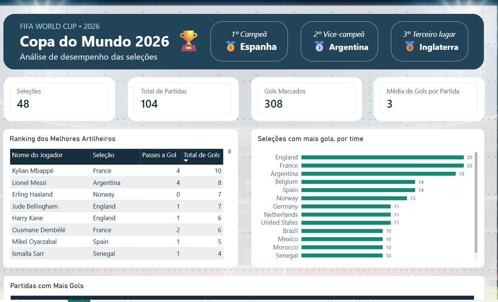
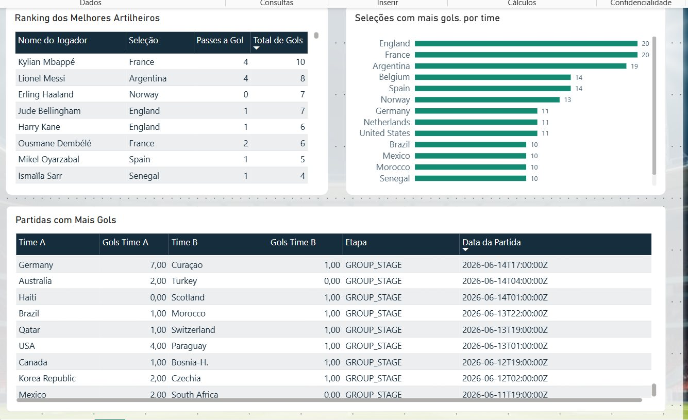

Desafio
Converter tabelas de partidas, seleções e artilheiros em análises compreensíveis, sem perder a consistência entre resultados, totais e filtros.
PROJECT 02 / BUSINESS INTELLIGENCE · WORK IN PROGRESS
Um estudo de caso sobre como organizar, verificar e explorar dados de um torneio com 48 seleções e 104 partidas, com atenção especial à modelagem, à qualidade dos indicadores e à experiência do usuário.
01 / PREVIEW
Imagens reais do relatório — versão de trabalho, não edição final.


02 / CASE STUDY
Converter tabelas de partidas, seleções e artilheiros em análises compreensíveis, sem perder a consistência entre resultados, totais e filtros.
Uma dimensão de seleções se conecta às tabelas de jogadores e à tabela auxiliar 'Partidas por Seleção' (duas perspectivas para cada jogo: mandante e visitante).
A auditoria identificou valores como 2.0 interpretados como 20 por causa da localidade na importação. Após corrigir tipos, os indicadores voltaram à escala consistente com os registros e totais oficiais.
O relatório foi organizado com indicadores de torneio, ranking de seleções, artilharia e detalhes por partida, usando tema personalizado e prioridades visuais claras.
03 / TECHNICAL QUALITY
Indicadores conferidos por contagem distinta de jogos e soma dos placares das duas seleções. O desempenho por seleção utiliza a tabela auxiliar para incluir mandantes e visitantes.
Os valores gerais foram confrontados com as estatísticas da FIFA. A procedência original de cada CSV e a reconciliação completa entre as tabelas ainda serão documentadas na versão final.